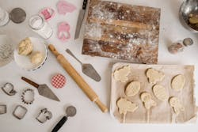

La repostería como pasatiempo es una afición enriquecedora que ofrece beneficios creativos, relajantes y sociales, permitiendo explorar nuevas culturas, conectar con seres queridos y desarrollar habilidades prácticas. Es una actividad que combina el placer de experimentar con ingredientes y sabores, la satisfacción de dominar nuevas recetas y el acto de compartir los postres, transformando momentos cotidianos en experiencias alegres y significativas.
La cocina también tiene historia. Como dijo Julia Child: “La gente que ama comer siempre es la mejor gente.”
Una de mis recetas favoritas es el postre frio de limón, el cual aprendí gracias a un video de YouTube.
| Beneficios de cocinar como pasatiempo | |
|---|---|
| Creatividad y aprendizaje | Permite explorar una gran variedad de recetas, técnicas y cocinas internacionales, ampliando el repertorio culinario. |
| Relajación y bienestar | La actividad puede ser meditativa y relajante, ofreciendo un escape de la rutina diaria. |
| Conexión social | Compartir una comida preparada con amor es una forma de demostrar afecto y unir a las personas. |
| Desarrollo de habilidades prácticas | Se adquieren habilidades útiles para la vida diaria, que además pueden ser compartidas con otras personas. |
| Exploración cultural | Es una manera de conocer y comprender diferentes tradiciones culinarias y culturas alrededor del mundo. |
| Satisfacción personal | Ver el progreso a medida que las habilidades mejoran y disfrutar del resultado del esfuerzo propio es muy motivador y satisfactorio. |